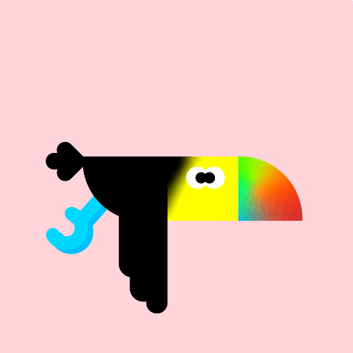

Hi, I'm Taiy!
A Little More About Me
Hi, I'm Taiylor Stark an aspiring UX/UI Designer! I am currently a Digital Arts and Sciences major at Seminole State College.
I love using my creativity to make aesthetically pleasing designs and websites. I also work as a social media manager
so I have some experience in graphic design. I am eager to get more experience in my desired
field and look forwards to new opportunities. I hope you enjoy my site!
Skills
- Digital Media
- User Experience Design
- User Interface Design
- Social Media
- Web Development
- Digital Marketing
- Graphic Design
- HTML
- CSS
- Communication Skills
- Wireframing
Software and Hardware
- Adobe Illustrator
- Adobe Photoshop
- Canva
- Figma
- Visual Studio Code
Check Out My Work!
Let's Be Besties!